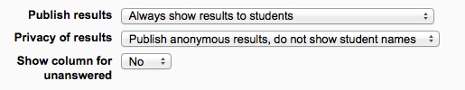

A choice activity is very simple – the teacher asks a question and specifies a choice of multiple responses. It can be useful as a quick poll to stimulate thinking about a topic; to allow the class to vote on a direction for the course; or to gather research consent.
Choice requires some preparation time for creating your activity and thinking about what results you would like to achieve, but your participation with activity itself is likely to be minimal.
With the editing turned on, choose from the”Add an activity or resource” link (or, if not present, the “Add an activity” drop down menu) the option Choice. To see all the settings expanded, click “Expand all” top right.
Choice name
A short name of the choice (e.g. “Favourite colour”). This will be displayed on the course’s homepage.
Description Type the description of the choice activity here. Click the icon on the left to expand the toolbars and drag the bottom right of the text box out to expand it. It should contain the question that you want your students to answer. An example of the choice text could be “What is your favourite colour?” There is also an option to display the choice description on the course page below the link to the activity.
Display mode for the options
- Choose “horizontally” if you only have three or four choices maximum; choose “vertically if you have a large number of choices.
Allow choice to be updated
If this is set to “Yes”, students can change their mind after they have voted. If it’s set to “No”, students cannot change their choice.
Limit the number of responses
Enabling this option allows you to limit the number of participants who can select each particular choice. When that number has been reached, no one else can select that choice.
Warning!! If you unintentionally check this box but don’t add a number then your students won’t be able to select any choices and will get confused :)
Option
- Specify here the options that participants have to choose from. They will become radio buttons when the choice is saved.
- You can leave other options blank or click “Add 3 fields to form” to add more options.
- If Limits is disabled, then any number of participants can select any of the options.
(These settings are collapsed by default)
Restrict answering
- If you check this box you can set an “open and close” date for your choice.
- If you leave it, they can respond at any time.
(These settings are collapsed by default)
Publish results
This determines whether (and when) the students will be able to view the results of the choice activity. They may:
- never see the results of the choice
- see the results only after they have given the answer themselves
- see the results only after the closing date of the choice
- always see the results
Privacy of results
If “Publish” was chosen above, then this dropdown in unlocked. You can decide whether to show names of students or merely the number who responded but without names.
Show column for unanswered
If set to “Yes”, this will display a column showing how many participants have not answered the choice activity yet. If set to “No”, the results will only include the participants who have already voted.
(These settings are collapsed by default)
These settings are visible if Conditional activities and Activity completion have been enabled in the site and the course.
- Download choice responses
- Delete choice responses
- Read choice responses
- Record a choice
- Add a new choice